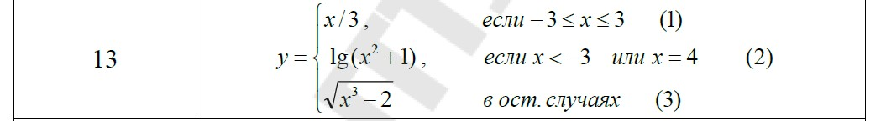

<!DOCTYPE html>
<html lang="en">
<head>
  <meta charset="UTF-8">
  <title>Пшеничник Валентин ЗИС-20</title>
</head>
<body>
<script>
    let x = +prompt("Введите число x")
    let y;
    if(x < -3){
        y = x/3;
    }else if (x <= 3){
        y = Math.log10(Math.pow(x, 2) + 1);
    }else {
        y = Math.sqrt(Math.pow(x, 3) -2);
    }
    document.write(`<p>В соответствии с вариантом неоходимо написать скрипт для вычисления значения функции Y. В выводимом файле предусмотреть форматирование документа, вывод текста задания, включая рисунок исходного выражения, и вывод информации о разработчике скрипта</p>`);
    document.write(``);
    document.write(`<p>Y = ${isNaN(y) ? "Введены неверные данные" : y}</p>`);
    document.write("<p>Выполнил Пшеничник В.Н.</p>")
</script>
</body>
</html>